Calendrier rentrée, examens, vacances, jours fériés
Mon emploi du temps séances, Teams, dates d'examens
Prise de présence saisir les absents d'une séance
Mes présences absences enregistrées, taux par module
Pointage — principe et circuit fiche mensuelle, statuts
Pointage — la fiche du mois ajouter, confirmer, soumettre
Pointage — rejets et contestations contester, séance oubliée
Mes vacations et fiches d'honoraires heures, montants, impression
Utiliser ECOGEST sur téléphone menu ☰
Bonnes pratiques et questions fréquentes et à qui s'adresser
Comment lire ce guide
Chaque opération est décrite en étapes numérotées (cercles bleus). Sur les captures d'écran, les 12 orange
indiquent l'endroit exact où cliquer ou saisir : ils correspondent aux légendes placées sous chaque image.
Les noms des boutons et des menus sont écrits comme ceci.
Les captures de ce guide ont été réalisées avec le compte de démonstration KARIM ALAOUI et des données
fictives (groupes, étudiants, séances, montants). Votre écran affichera vos propres informations, mais la présentation et
les opérations sont strictement identiques.
1. Présentation d'ECOGEST
ECOGEST est l'application de gestion de l'École Supérieure de Rabat. Votre espace professeur rassemble tout ce dont
vous avez besoin pour vos cours : votre emploi du temps, la prise de présence de vos étudiants, le pointage de vos séances et le suivi
de vos vacations.
Menu
Ce que vous y faites
🗓️ Calendrier
Consulter les dates importantes de l'année : rentrée, contrôles continus, examens, vacances, jours fériés, réunions.
🕛 Pointage
Déclarer chaque mois les séances que vous avez assurées, suivre leur validation, contester un rejet, consulter vos vacations
payées et imprimer vos fiches d'honoraires.
📅 Planification cours / examens
Votre emploi du temps semaine par semaine (vos séances seulement, tous groupes confondus), les liens Teams
des cours à distance et les dates de contrôle continu et d'examen de vos modules.
✅ Présences
Saisir les absents de chaque séance, consulter les absences enregistrées et le taux d'absence de vos modules.
📖 Guide d'utilisation
Ce guide, à lire en ligne ou à télécharger en PDF.
Ce dont vous avez besoin
Votre compte scolaire Microsoft 365 @esrmi.ma (adresse et mot de passe communiqués par l'administration).
Un ordinateur, une tablette ou un téléphone avec un navigateur récent (Microsoft Edge, Google Chrome, Safari ou Firefox).
Une connexion Internet.
Vos données sont personnellesVous ne voyez que vos séances, vos groupes et vos fiches de pointage.
Les informations proviennent directement de l'espace SharePoint de l'école et sont mises à jour en temps réel.
2. Se connecter et se déconnecter
La connexion utilise votre compte Microsoft 365 de l'école : aucun mot de passe supplémentaire n'est nécessaire.
2.1Se connecter
Ouvrez l'adresse d'ECOGEST communiquée par l'administration dans votre navigateur.
Repérez la carte Professeurs1 et cliquez sur son bouton Se connecter2.
Choisissez ou saisissez votre compte @esrmi.ma, puis votre mot de passe Microsoft.
Vous arrivez dans votre espace professeur. Votre espace est de toute façon reconnu automatiquement à partir de votre compte.
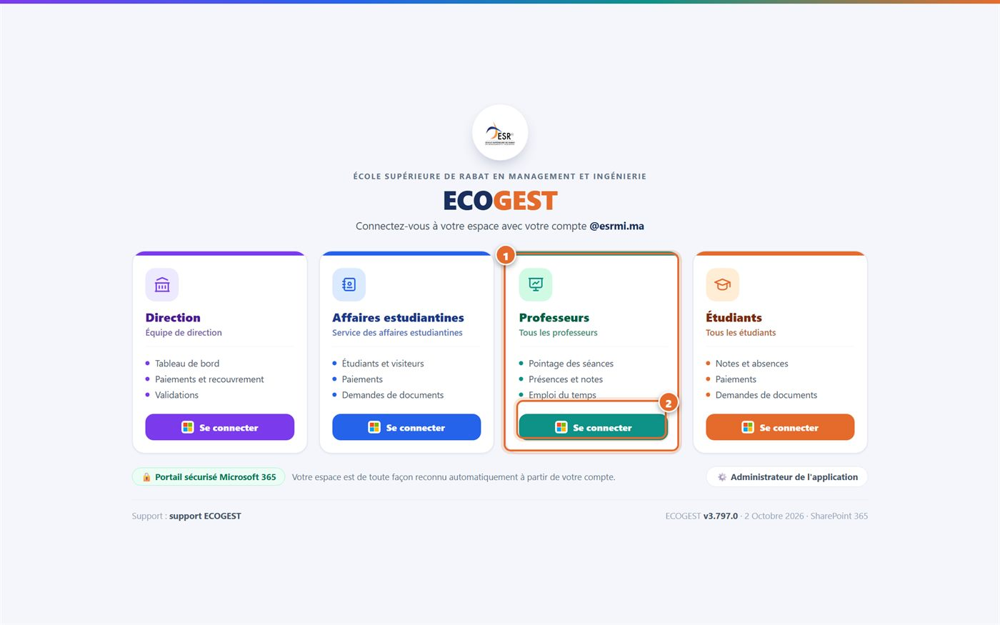
Page de connexion.1 Carte « Professeurs » · 2 Bouton « Se connecter ».
Première connexionMicrosoft peut vous demander d'accepter les autorisations de l'application, puis
d'ajouter une méthode de vérification (numéro de téléphone ou application Microsoft Authenticator). Suivez simplement les instructions à l'écran.
2.2Se déconnecter
Cliquez sur Déconnexion en bas du menu, ou sur le bouton de sortie ⇥ de votre carte de profil.
Sur un ordinateur partagé, fermez ensuite toutes les fenêtres du navigateur.
3. Découvrir l'interface
Le menu de gauche donne accès à toutes vos pages ; la partie droite affiche la page ouverte.
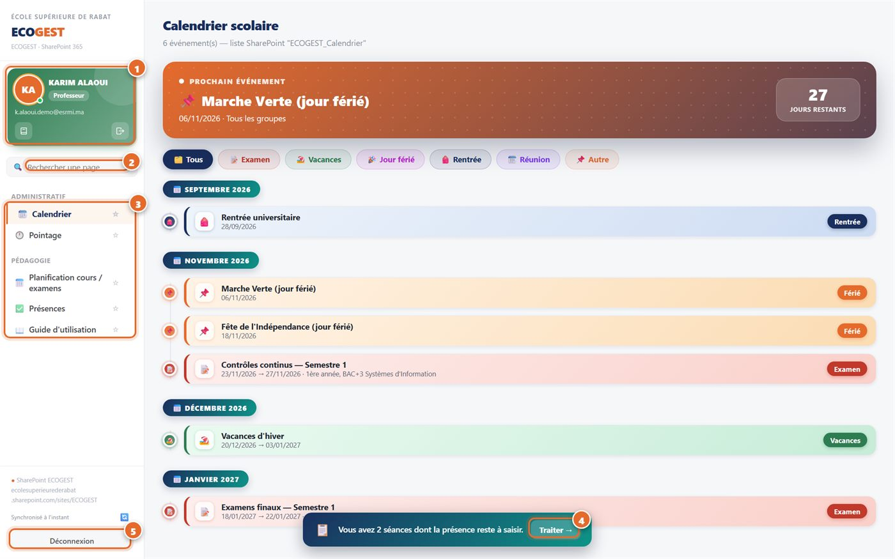
L'espace professeur.1 Carte de profil · 2 Recherche · 3 Menus ·
4 Rappel des présences à saisir · 5 Déconnexion.
1
Carte de profil : votre nom, votre rôle et votre adresse. Le petit bouton 📖 ouvre ce guide ; le bouton ⇥ vous déconnecte.
2
Rechercher une page : tapez quelques lettres (par exemple « poin ») pour ouvrir directement une page.
3
Menus : Calendrier et Pointage (rubrique Administratif), Planification, Présences et Guide (rubrique Pédagogie).
Le menu ouvert est surligné. Cliquez sur l'étoile ☆ d'un menu pour l'épingler en haut, dans vos favoris.
4
Rappel : tant qu'une de vos séances n'a pas de présence saisie, un bandeau l'indique en bas de l'écran.
Cliquez sur Traiter → pour ouvrir directement la prise de présence (chapitre 6).
5
Déconnexion, et indicateur de synchronisation avec SharePoint juste au-dessus (« Synchronisé à l'instant »).
4. Calendrier
Toutes les dates importantes de l'année universitaire, classées par mois.
Cliquez sur Calendrier.
Le bandeau Prochain événement1 affiche la prochaine date à retenir et le nombre de jours restants.
Utilisez les filtres 2 (Examen, Vacances, Jour férié…) pour n'afficher
qu'un type d'événement ; Tous les réaffiche tous.
Chaque événement indique ses dates et, le cas échéant, le groupe concerné (par exemple les contrôles continus d'un groupe).
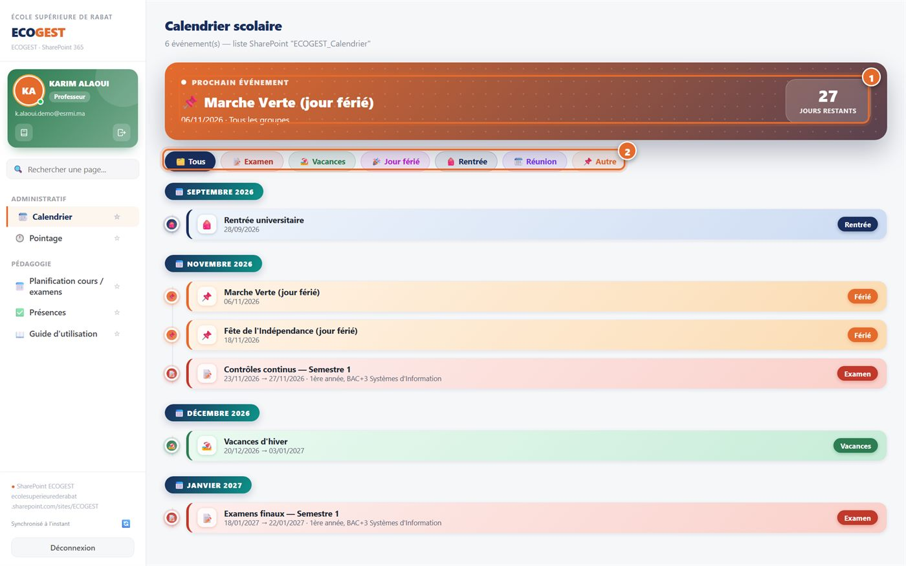
Calendrier scolaire.1 Prochain événement · 2 Filtres par type.
5. Mon emploi du temps
Uniquement vos propres séances, tous groupes confondus, semaine par semaine.
5.1Consulter vos séances
Cliquez sur Planification cours / examens.
Vérifiez l'année universitaire, puis choisissez le semestre1.
Choisissez la semaine dans la liste 2, ou passez d'une semaine à l'autre avec ◀ et ▶.
La semaine en cours est affichée à l'ouverture.
Chaque séance indique le module, le groupe (par exemple B1-SI), l'horaire, la période du module, le mode
(📍 Présentiel avec la salle, ou 💻 À distance) et les dates de CC (contrôle continu) et d'EFM (examen de fin de module).
Pour une lecture compacte, les jours et heures sans séance sont masqués (fine bande hachurée).
Cliquez sur ↕ Afficher tous les jours et toutes les heures3 pour voir la semaine complète.
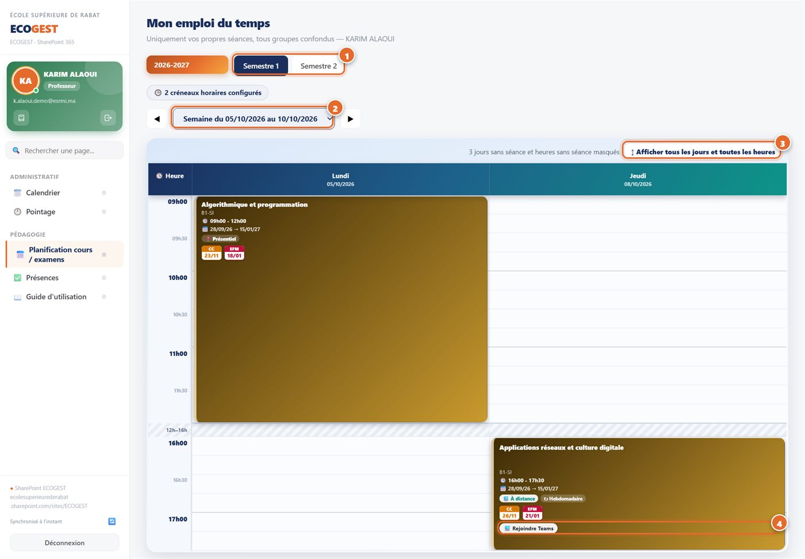
Mon emploi du temps.1 Semestre · 2 Semaine · 3 Afficher toute la semaine ·
4 Rejoindre un cours à distance.
5.2Donner un cours à distance (Teams)
Au moment du cours, repérez la séance marquée 💻 À distance.
Cliquez sur 💻 Rejoindre Teams4 : la réunion Teams du cours s'ouvre (application ou navigateur).
Connectez-vous avec votre compte @esrmi.ma et démarrez la réunion à l'heure prévue : l'administration suit en direct le démarrage
des cours à distance.
Un changement dans votre emploi du temps ?La planification est tenue à jour par l'administration.
Si une séance est erronée ou manquante, signalez-le à l'administration : ne déclarez pas de séance différente sans l'avoir prévenue.
6. Prise de présence
Pour chacune de vos séances, indiquez les étudiants absents. C'est à partir de cette saisie que sont calculés les absences et
les taux d'absence de chaque étudiant.
6.1Saisir les absents d'une séance
Cliquez sur Présences, puis sur l'onglet 📋 Prise de présence. Le chiffre rouge indique le nombre de
séances qui attendent votre saisie.
Dans Séances à traiter, cliquez sur la séance concernée 1 (module, date, horaire et groupe) : la liste de ses étudiants s'affiche.
Tous les étudiants sont « Présent » par défaut. Cliquez sur un étudiant absent 2 : il passe en « Absent » (en rouge).
Cliquez à nouveau pour annuler.
Cliquez sur ✓ Valider la présence de la séance3. La séance disparaît de la liste : la saisie est enregistrée.
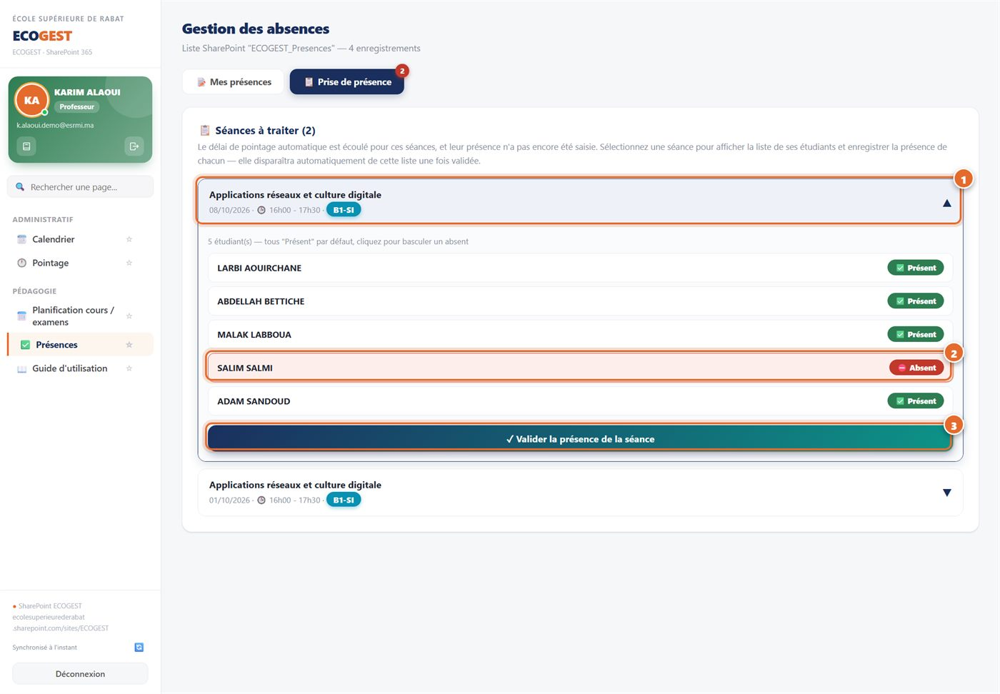
Prise de présence.1 Séance à traiter · 2 Étudiant marqué absent · 3 Validation.
6.2Quand une séance apparaît-elle « à traiter » ?
Une séance de votre emploi du temps devient « à traiter » 15 minutes après son heure de début (délai fixé par l'administration),
tant que sa présence n'a pas été saisie.
Elle reste proposée pendant 15 jours ; le bandeau de rappel (chapitre 3) vous le signale sur toutes les pages.
Une fois validée, elle n'apparaît plus : pour corriger une saisie déjà validée, adressez-vous à l'administration.
AstuceFaites l'appel en début de cours et validez-le dès la fin de la séance, depuis votre téléphone si besoin
(chapitre 12) : vous évitez les oublis et les étudiants voient leurs absences à jour.
7. Mes présences
Toutes les absences enregistrées dans vos modules, et le taux d'absence de chacun.
Cliquez sur Présences, onglet 📝 Mes présences.
Le graphique Taux d'absence par module1 indique, pour chacun de vos modules, les heures d'absence sur le volume
horaire total et le pourcentage correspondant. Choisissez l'année et le semestre au-dessus du graphique.
Le tableau 2 liste chaque absence : date, séance, étudiant, N° d'inscription, module, statut et mode d'enregistrement.
Un badge ⚠️ Non justifiée ou Justifiée indique si l'étudiant a fourni un justificatif à l'administration.
Affinez la liste avec les filtres : recherche par nom ou N° d'inscription, groupe, semestre, module, statut, année et période (dates de début et de fin).
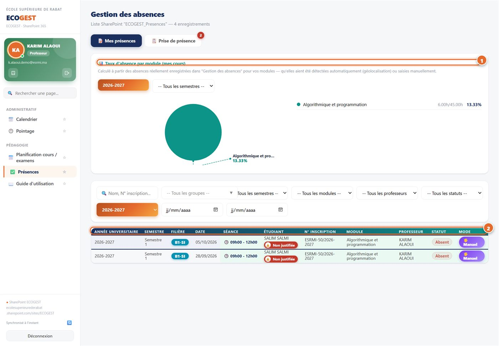
Mes présences.1 Taux d'absence par module · 2 Liste des absences enregistrées.
JustificationsLes justificatifs (certificat médical…) sont traités par l'administration : le statut d'une absence passe
alors automatiquement à « Justifiée ».
8. Pointage — principe et circuit
Chaque mois, vous déclarez dans une fiche de pointage les séances que vous avez réellement assurées. Après validation
des séances et traitement du paiement, la fiche alimente vos vacations.
8.1Le circuit d'une fiche
Statut de la fiche
Signification — qui agit ?
📝 Brouillon
Vous : vous ajoutez et confirmez vos séances, puis soumettez la fiche.
⏳ À valider (Iliass Elmzioui)
La fiche est soumise : chaque séance est validée ou rejetée.
💰 À traiter (Fatima Zahra Zniber)
Séances validées : le paiement est en cours de traitement.
✅ Terminée
Paiement traité : la fiche figure dans vos vacations (chapitre 11).
À chaque étape, les personnes concernées sont prévenues par e-mail. En haut de chaque fiche, un récapitulatif du circuit montre
qui a agi et à quelle date (voir chapitre 10).
8.2La période d'une fiche
Une fiche mensuelle couvre la période du 26 du mois précédent au 25 du mois. Exemple : la fiche d'octobre 2026 regroupe les séances
du 26/09/2026 au 25/10/2026. La période est rappelée en haut de chaque fiche.
8.3Vos fiches
Cliquez sur Pointage : la page Mon pointage liste vos fiches, avec leur statut, le nombre de séances et les heures validées.
Cliquez sur Ouvrir2 pour afficher le détail d'une fiche.
Une fiche encore en Brouillon peut être supprimée avec 🗑 ; une fiche soumise ne peut plus l'être.
Mon pointage.1 Nouvelle fiche du mois · 2 Ouvrir une fiche · 3 État de mes vacations ·
4 Fiche d'honoraires.
9. Pointage — la fiche du mois
9.1Créer la fiche du mois
Sur la page Mon pointage, cliquez sur + Nouvelle fiche du mois.
Choisissez le mois1, puis cliquez sur Créer la fiche2. La fiche est créée en Brouillon.
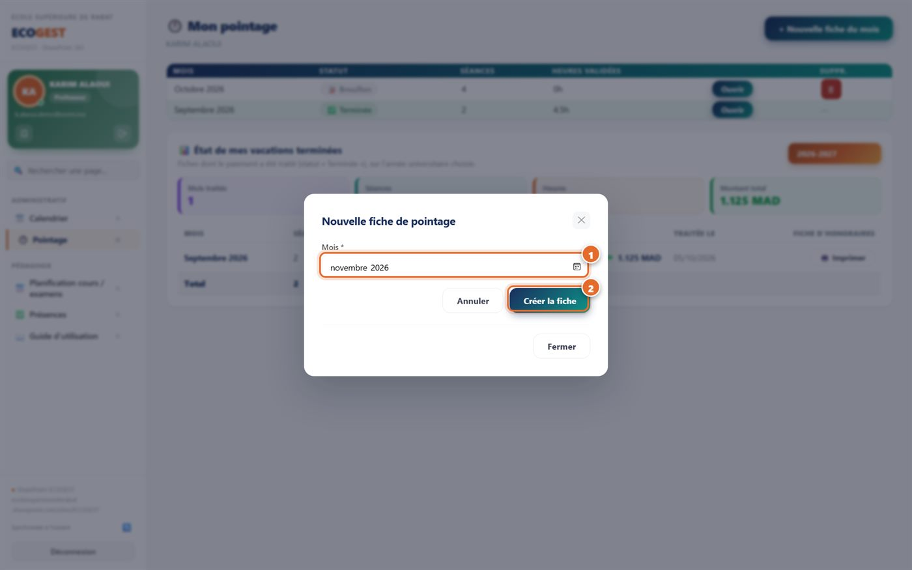
Nouvelle fiche de pointage.1 Mois · 2 Créer la fiche.
9.2Ajouter et confirmer vos séances
Ouvrez la fiche du mois. Dans le cadre Ajouter une séance1, renseignez la date, le module (la liste propose vos modules,
avec leur groupe et leur semestre), l'heure de début et l'heure de fin. Un commentaire est possible (rattrapage, demi-groupe…).
Pour une activité qui n'est pas un cours de votre liste, choisissez « ✏️ Autre (préciser l'action réalisée) » et décrivez-la.
Cliquez sur + Ajouter la séance : elle apparaît dans le tableau, avec sa durée calculée automatiquement.
Vérifiez chaque ligne puis cliquez sur ✓ Confirmer2 : la séance passe à ✅ Confirmée.
Pour corriger une séance, utilisez ✏️ (toute modification annule sa confirmation : confirmez-la de nouveau) ; pour la retirer, 🗑.
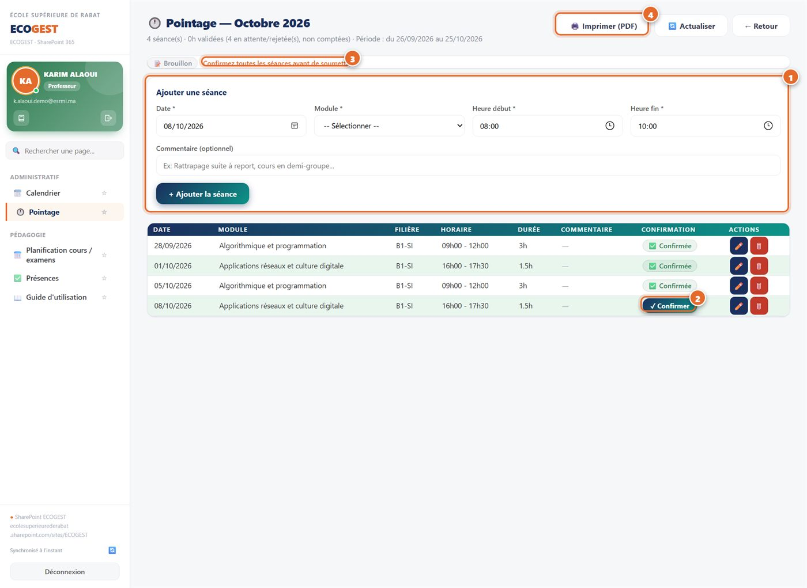
Fiche du mois (brouillon).1 Ajouter une séance · 2 Confirmer une séance ·
3 Rappel avant soumission · 4 Imprimer la fiche.
9.3Soumettre la fiche
Tant qu'une séance n'est pas confirmée, la fiche affiche « Confirmez toutes les séances avant de soumettre »3.
Quand toutes les séances sont confirmées, cliquez sur → Soumettre la fiche pour validation et confirmez.
La fiche passe à ⏳ À valider : elle n'est plus modifiable. L'administration est prévenue automatiquement.
9.4Imprimer et actualiser
🖨️ Imprimer (PDF)4 produit la fiche de pointage du mois au format PDF.
🔄 Actualiser recharge la fiche depuis SharePoint (par exemple pour voir une validation qui vient d'être faite).
← Retour revient à la liste de vos fiches.
ImportantNe déclarez que les séances réellement assurées, avec leurs horaires exacts. Une séance qui ne correspond
pas à l'emploi du temps peut être rejetée.
10. Pointage — rejets et contestations
10.1Comprendre le statut d'une séance
Statut
Signification
⏳ En attente
La fiche est soumise ; l'administration n'a pas encore statué sur la séance.
✅ Validée
La séance est retenue : ses heures sont comptées dans la fiche.
✗ Rejetée
La séance n'est pas retenue. Le motif figure dans la colonne Commentaire.
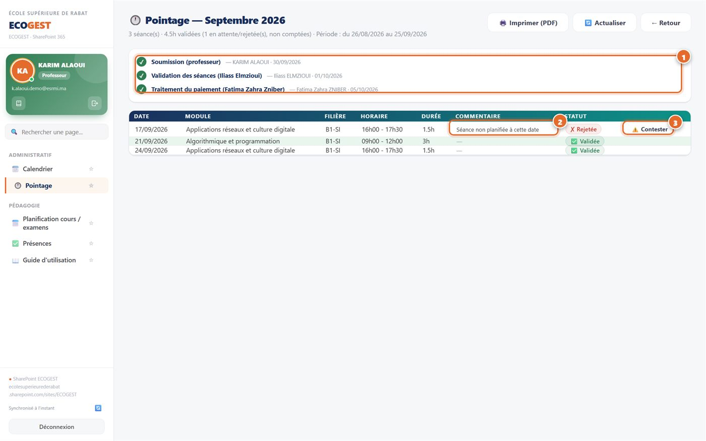
Fiche traitée.1 Circuit de la fiche (qui a agi et quand) · 2 Motif du rejet ·
3 Contester le rejet.
10.2Contester une séance rejetée
Ouvrez la fiche et repérez la séance ✗ Rejetée ; lisez le motif 2.
Si vous n'êtes pas d'accord, cliquez sur ⚠️ Contester3 (ce bouton n'apparaît que pour une séance rejetée).
Expliquez précisément pourquoi la séance a été rejetée à tort 1 (ci-dessous) : report, changement de salle, créneau mal renseigné…
Cliquez sur 📨 Envoyer la contestation2. La séance affiche 🕒 Contestation en attente le temps que
l'administration l'examine.
Si la contestation est acceptée, la séance est validée et transférée sur votre fiche du mois suivant (avec sa date d'origine), puis
verrouillée 🔒 : elle ne peut plus être modifiée ni supprimée, et la fiche qui la contient ne peut plus être supprimée.
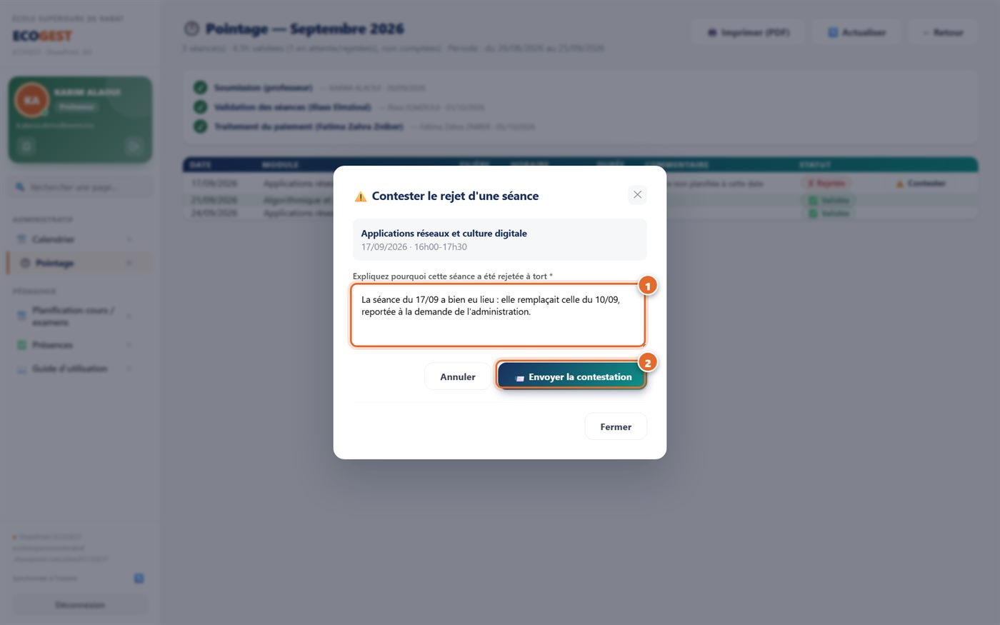
Contestation.1 Explication · 2 Envoi de la contestation.
10.3Une séance oubliée ?
Si le mois est encore ouvert (fiche en Brouillon), ajoutez simplement la séance à la fiche (chapitre 9).
Si la fiche du mois a déjà été soumise, ne tentez pas de la modifier : contactez l'administration en précisant le module, la date exacte et l'horaire.
L'administration peut l'ajouter en rattrapage sur la fiche du mois en cours, en conservant sa date d'origine.
11. Mes vacations et fiches d'honoraires
Le récapitulatif de vos fiches dont le paiement a été traité, mois par mois.
En bas de la page Mon pointage, la section 📊 État de mes vacations terminées3 (capture du chapitre 8) reprend les fiches au statut
✅ Terminée de l'année universitaire choisie.
Quatre indicateurs résument l'année : mois traités, séances, heures et montant total.
Le tableau détaille chaque mois : séances, heures, taux horaire, montant et date de traitement.
Cliquez sur 🖨️ Imprimer4 pour obtenir la fiche d'honoraires du mois en PDF.
Changez d'année avec la liste en haut à droite de la section.
Taux horaireLes montants sont calculés à partir du taux horaire enregistré sur votre fiche professeur.
Si aucun taux n'est renseigné, un message vous l'indique : contactez l'administration.
AstuceUn pointage confirmé et soumis rapidement, dès la fin du mois, évite tout retard dans le traitement de vos vacations.
12. Utiliser ECOGEST sur téléphone
ECOGEST s'adapte automatiquement aux téléphones et aux tablettes : toutes les opérations de ce guide y sont disponibles —
la prise de présence en particulier se fait très bien en classe, depuis votre téléphone.
Ouvrez l'adresse d'ECOGEST dans le navigateur de votre téléphone et connectez-vous comme indiqué au chapitre 2.
Le menu est replié : touchez le bouton ☰ en haut à gauche pour l'ouvrir, puis touchez le menu souhaité.
Le bouton ✕ referme le menu.
Dans Présences → Prise de présence, touchez la séance, puis les étudiants absents, et validez.
Dans Planification, l'emploi du temps affiche un jour à la fois : choisissez le jour dans la barre ◀ Lun Mar Mer… ▶.
Les listes de choix s'ouvrent dans un volet en bas de l'écran : touchez simplement l'option voulue.
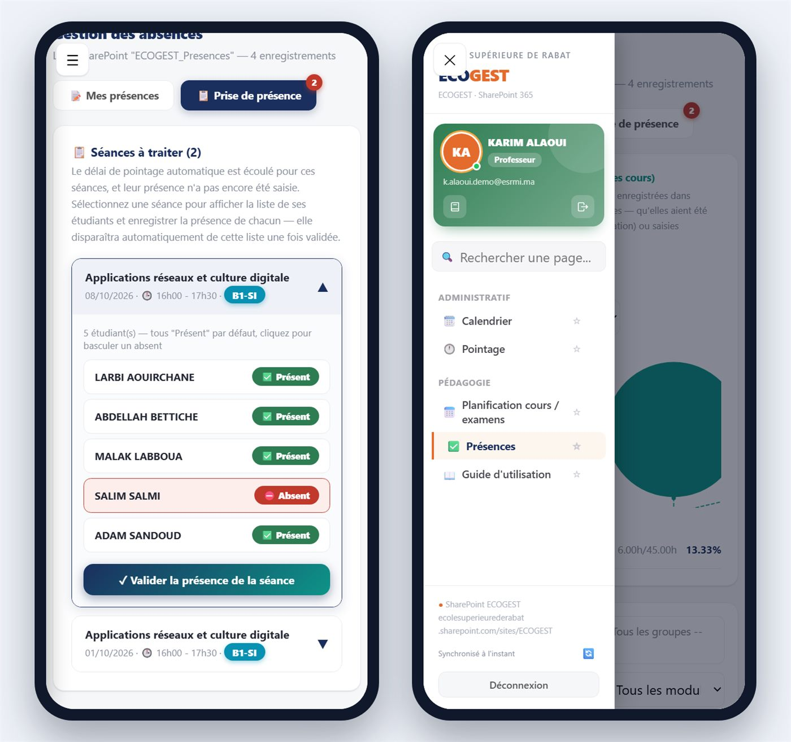
Sur téléphone : à gauche, la prise de présence d'une séance ; à droite, le menu ouvert avec le bouton ☰.
AstuceAjoutez ECOGEST à l'écran d'accueil de votre téléphone (menu du navigateur → « Ajouter à l'écran d'accueil ») pour l'ouvrir comme une application.
13. Bonnes pratiques et questions fréquentes
13.1Bonnes pratiques
Saisissez la présence le jour même de chaque séance.
Ajoutez et confirmez vos séances au fil du mois dans votre fiche de pointage, puis soumettez-la dès la fin du mois (après le 25).
Vérifiez chaque semaine votre emploi du temps : il peut être modifié par l'administration.
Pour un cours à distance, rejoignez toujours Teams avec votre compte @esrmi.ma.
Contestez rapidement une séance rejetée à tort, en expliquant clairement le motif.
13.2Questions fréquentes
La page Pointage affiche « Aucune fiche professeur associée à votre compte ».
Votre compte n'est pas encore relié à votre fiche professeur. Contactez l'administration en indiquant l'adresse e-mail affichée sur la page.
Une séance de mon emploi du temps n'apparaît pas dans la prise de présence.
Elle n'apparaît que 15 minutes après son début, et pendant 15 jours. Si elle a déjà été validée, elle n'y figure plus. Sinon, vérifiez auprès de
l'administration qu'elle est bien planifiée à votre nom.
J'ai marqué un étudiant absent par erreur après validation.
Signalez-le à l'administration, qui peut corriger l'absence.
Je ne peux plus modifier ma fiche de pointage.
Une fiche soumise n'est plus modifiable. Pour une séance oubliée ou erronée, contactez l'administration (chapitre 10.3).
Le bouton « Contester » n'apparaît pas.
Il n'existe que pour une séance au statut « Rejetée », et disparaît dès qu'une contestation est en cours.
Mes vacations n'affichent aucun montant.
Seules les fiches « Terminée » y figurent, pour l'année choisie. Si un message signale l'absence de taux horaire, contactez l'administration.
Puis-je utiliser ECOGEST sur mon téléphone ?
Oui : ordinateur, tablette et téléphone. Pensez à vous déconnecter sur les appareils partagés.
Besoin d'aide ?
Pour toute question sur l'utilisation d'ECOGEST, sur votre emploi du temps ou sur vos vacations, adressez-vous à l'administration de l'école.
Guide de l'espace professeur ECOGEST — édition octobre 2026 (version de l'application v3.798).
Les captures d'écran utilisent un compte de démonstration et des données fictives.